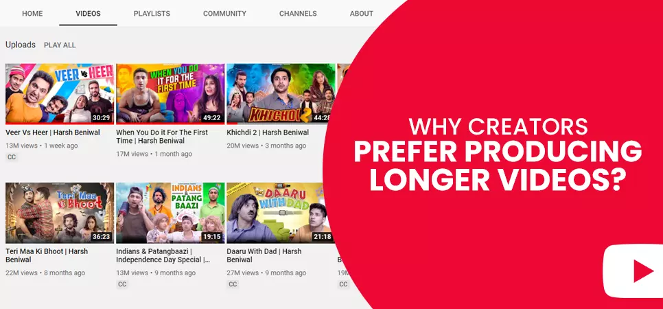
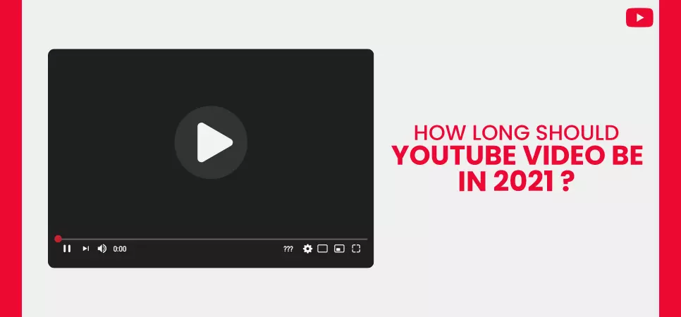
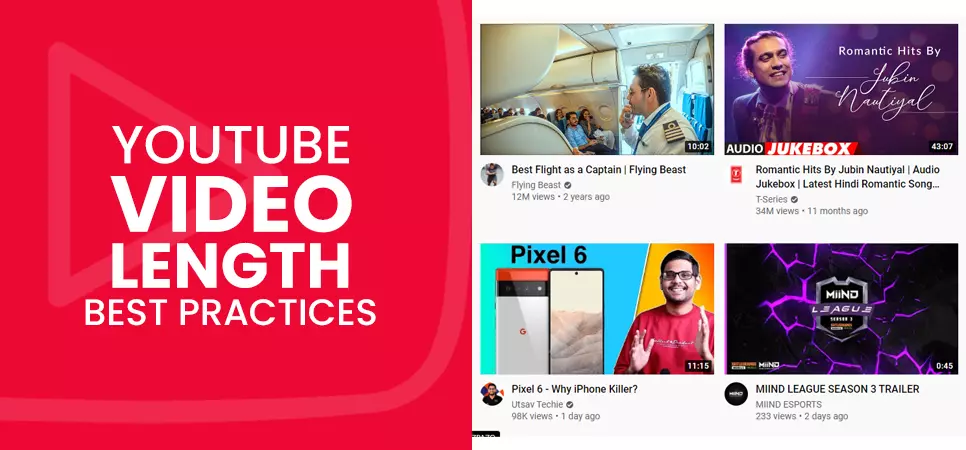
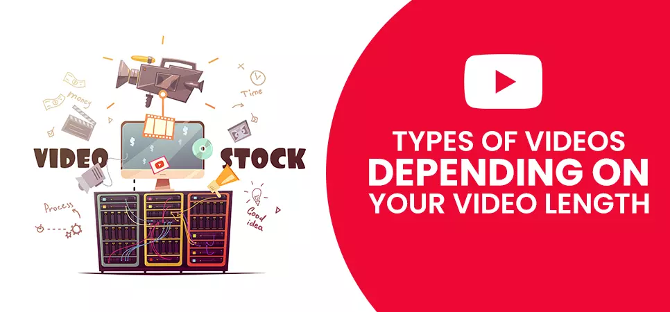
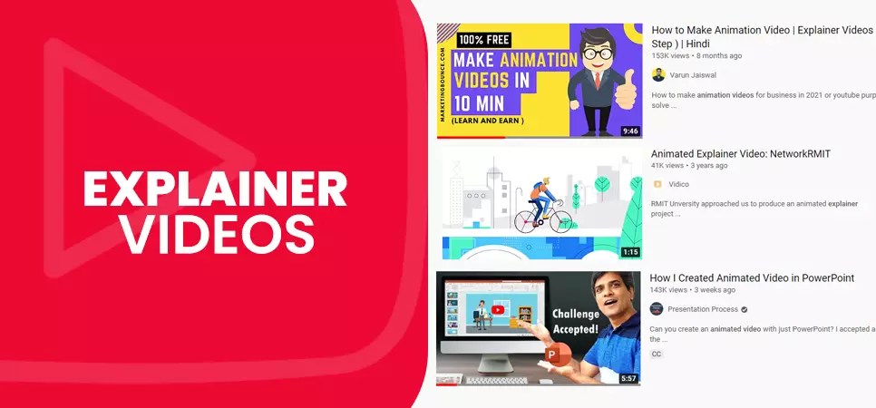
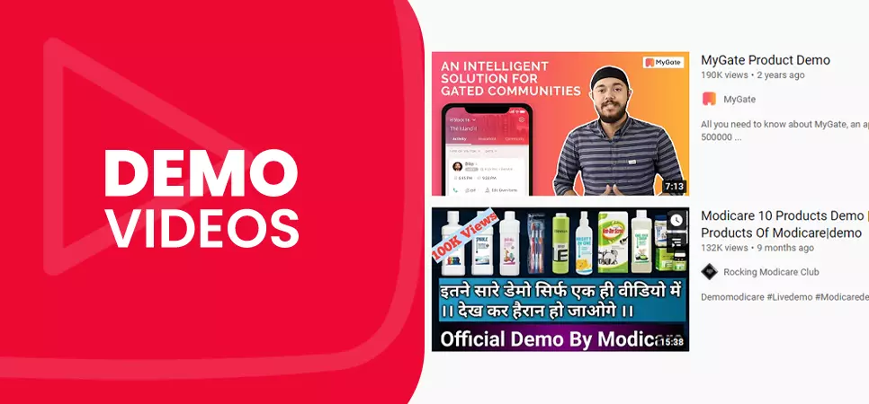
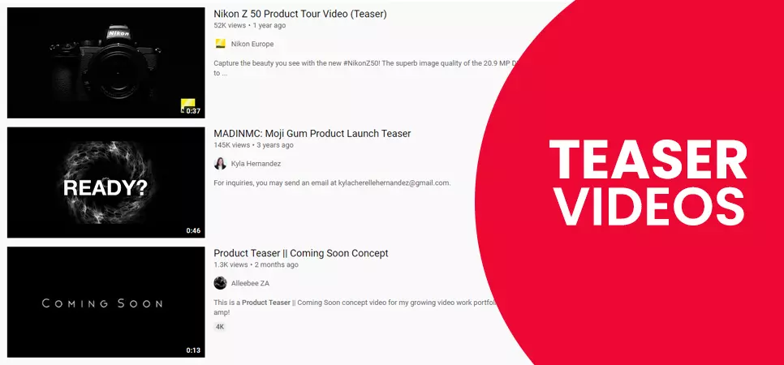
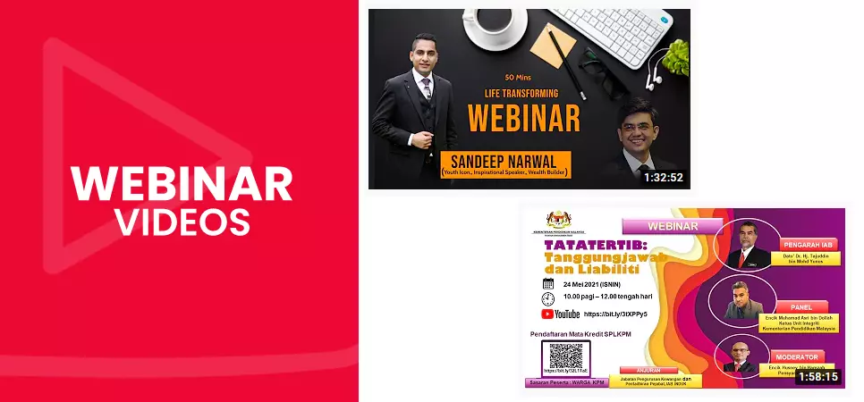
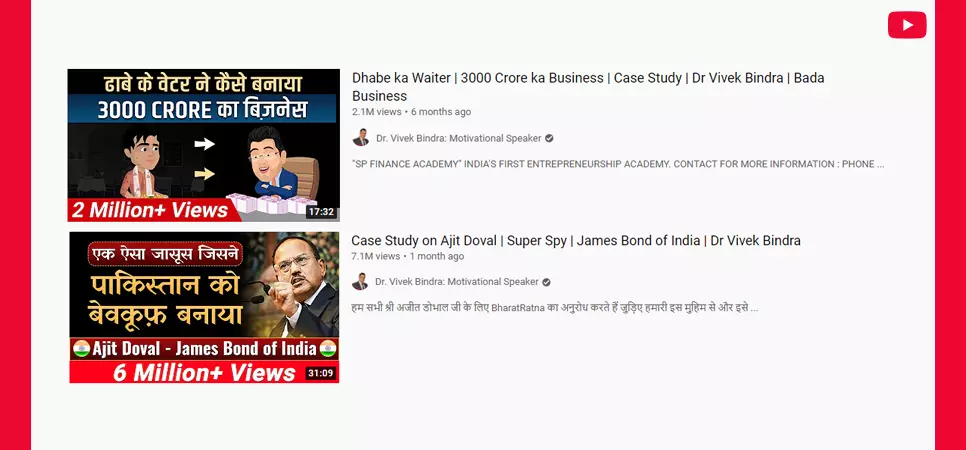

Contents
YouTuber often indulges themselves in such practices, and it never helps. Users bounce from the videos no sooner than after they clicked on them. Low-quality content gets fewer takers.
You could, however, buy YouTube subscribers – real people who will engage with your content and help you find the perfect YouTube video length limit that works for you.
Why Creators Prefer producing longer videos

Well, why shouldn't they? It's a well-known fact that the algorithm considers watch-time as the most crucial factor when it is ranking a video - hence Youtubers want to accumulate as much of it under their belt as possible. Watch-time is the primary goal that drives creators to exceed the YouTube video length limit.
Then there is also the question of earning. Longer videos provide more breathing space for YT to show ads to its users, consequently generating more revenue for the creators. In contrast to placing ads at the beginning of the video, YouTubers gain the ability to embed ads in the middle of their footage once they cross the 10-minute mark.
Also read: YouTube Channel Monetization
How Long Should Your YouTube Video Be in 2021

If every second of every minute of your video oozes quality and provides value to your viewers, either through entertainment or knowledge, then even 10-minute footage would suffice. We recommend keeping 10 minutes as the optimal video length for YouTube videos. Then again, the duration depends on the topic you cover – some can be wrapped within the said duration, whereas others need a more in-depth explanation, demanding longer content.
In your videos, address problems faced by your target audience and provide relevant solutions. When you extend your footage longer than necessary, you do a great disservice to your viewers. People come to you for answers; they won't react kindly to fluff in your content. Too many individuals leaving your channel affects audience retention rate in a wrong way - hurting your video's chances of being promoted by YouTube.
But when all is said and done, we suggest creators not overthink and keep the YouTube video length limit just right to meet the content demands. If you need two minutes to impart valuable information, then go for a two-minute video. Similarly, go for 20-minute content if you need twenty minutes of communication with your audience.
YouTube Video Length: Best Practices

-
Make your videos smaller if you can communicate all crucial details within a shorter duration.
-
You will witness a spike in audience drop-off rate as your video progresses. Hence you have to make sure to grab their attention from the start. As you cross the 12-minute mark, you start losing more people, even more than the dropping rate between 2 and 6 minutes.
-
Include a solid call to action at the end of your lengthier videos. Utilize the power of Cards and End Screens that pop up as your video progresses.
-
Consider dividing your longer content into smaller, more easily consumable video clips. The playlist is a great way to gather clips that make up lengthier footage - this will make it much easier for viewers with a short attention span to consume your content. As a bonus, you acquire additional video resources for your channel.
-
Although, don't opt for a content split if your speech is more effective when delivered in a continuous flow rather than in smaller parts.
Also read: How to leverage YouTube cards in your videos:
Types of Videos Depending on your Video Length

Your objective determines the type of video you produce; it will also directly or indirectly influence videos' length. At the same time, short videos indeed tend to perform a tad better than the longer ones. But when it comes to content like webinars or explainer videos, footage of smaller duration won't cut it.
It would be best if you analyze your marketing funnel. Audiences at different stages have different video needs. For example, promo videos would appeal better to the audience at the awareness stage of the funnel. Whereas how-to and explainer videos tend to attract people from loyalty and advocacy stages - since these people are already familiar with your brand, they are likely to stay and engage with your lengthier content for a longer duration.
-
How-to Videos
How-to videos tend to be longer, mainly because of the nature of the content, which is to explain something to its viewers. 46% of viewers on YT want to learn something new by watching videos. YouTube video length limit for this type of content is 3 to 6 minutes, although it can be extended if additional information input is required.
-
Explainer Videos

We strongly suggest keeping explainer videos as short as possible; these videos are considered trailers for a brand. You should maintain the video length around 60 to 90 seconds tops.
-
Demo Videos

You should keep the YouTube video length limit for demo videos between 2 to 5 minutes. Please consider producing multiple small demos instead of one big footage. You can also group your videos into a playlist if your viewers wish to watch them in sequence.
-
Teaser Videos

Promo and teaser videos create excitement and anticipation among the audience about your upcoming product or services. We suggest creators keep the length of the video below 30 seconds.
-
Webinar Videos

Webinars usually feature multiple speakers, covering various topics and engaging in Q&As. Hence, this type of video tends to be longer - having an optimal video length of 15 to 60 minutes.
-
Case Study Videos

You can experiment with different lengths when it comes to a case study video. You could opt for a single 5 to 10 minutes video, or you can divide your content into bite-size testimonials of 60 to 90 seconds each. Small clips are ideal for sharing on your social media platforms, inserted within your emails, or embedded on your website.
We hope you found our article on the best length for YouTube videos 2021 helpful, how long do you prefer your videos to be? Let us know in the comments.
Do check out more awesome content on our website.
Feel free to share.